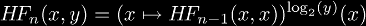
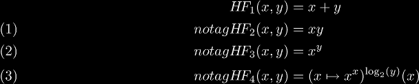
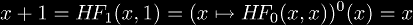
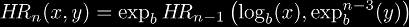
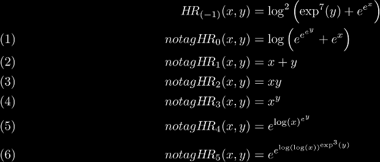
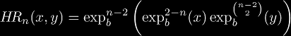

Hyper-operator Terminology
Hyper-operators are an increasingly general class of binary operations that include addition, multiplication, and exponentiation. There are many different kinds of hyper-operators that have successfully spanned these three operations, but unless otherwise specified, usually the first kind are implied.
The different kinds of hyper-operators discussed on this site are:
- the hyper-operators -- also known as:
- hyperops -- since it is a single short word,
- hyper-operations -- since there is little distinction between an operator (symbol) and operation (function),
- higher hyper-operators -- since they generally produce values greater than other hyper-operators,
- right hyper-operators -- since they are defined by right-associative iteration (x(x(xx))),
- the Ackermann function -- since this was defined by Wilhelm Ackermann in 1928,
- the Grzegorczyk hierarchy -- since this was defined by Andrzej Grzegorczyk in 1953,
The term Ackermann function is more common than Grzegorczyk hierarchy in English, and
is by far the oldest term for these hyper-operators. These hyper-operators are what you get when
you evaluate a repeated right-associative binary operation starting with addition.
- lower hyper-operators -- also known as:
- left hyper-operators -- since they are defined in terms of left-associative iteration (((xx)x)x),
These hyper-operators generally produce values less than other hyper-operators, hence the name.
These are what you get when you evaluate a repeated left-associative binary operation starting with addition.
Although lower4 is expressible in hyper3, lower5 is not expressible
in standard closed form.
- mixed hyper-operators -- also known as:
- Bromer hyper-operators -- since Nick Bromer wrote about them in 1987,
- Müller hyper-operators -- since Markus Müller wrote about them in 1993,
Although Bromer's notation differ from Knuth's notation, his notation seems to have influenced both
Müller and Snowden , since they use his notation verbatim. None of these authors really develop
the theory of mixed hyper-operators, so it doesn't seem fitting to name them Bromer hyper-operators, for example.
The nice thing about these is that they include both higher and lower hyper-operators as special cases, since
instead of being a sequence as the first two are, mixed hyper-operators form a binary tree.
- balanced hyper-operators -- also known as:
- balanced hyper-operators -- since they are balanced, and perfer neither left nor right associative iteration,
- centered hyper-operators -- since they generally produce values in the center of other hyper-operator values,
Frappier wrote an excellent article on the iteration of xx which is a difficult function to iterate.
Although he only talked about the iteration of xx,
he essentially paved the way for hyper-operators based on his approach, hence the name.
- commutative hyper-operators -- not well-known.
I suggest if you want to know more about them, read his paper about them here. As far as I understand, he defines addition and multiplication on binary trees, and iterates these operations instead. This is the most unique method I have seen to define hyper-operators. If only there was a conversion between binary trees and rationals...
- exponential hyper-operators -- not known before, because I invented them.
I know it is bad style to name things after yourself in math, but this is my website, so I can do what I want! :)
These hyper-operators are defined in such a way as to include: addition, multiplication, and exponentiation, but not tetration, pentation, and so on.
Frappier Hyper-operators
Frappier hyper-operators are defined by the relation:

This definition has the following consequences:

It can be shown that the zeroth Frappier hyper-operator cannot exist, because
 by definition. Since this is a contradiction,
we cannot have a zeroth Frappier hyper-operator.
Robbins Hyper-operators
Robbins hyper-operators are defined by the relation:

This definition has the following consequences (for b = e):

One of the first things to notice is that all my operators are expressible in closed form, unlike the the other hyper-operators. This means no hassle in their calculation, and no worries about how to write them. It also means no "new" operations. The second thing to notice is that the base b does not "get involved" in addition, multiplication, and exponentiation, so any base will interpolate these three operators. Another thing of note about them is that their extension to non-integer n is equivalent to the corresponding extension of tetration! This means if we can define tetration in a logical, consistent manner, then all these operators automatically get interpolated. Once we can calculate continuously iterated exponentials, then we can express all my operators as:

where the continuously iterated exponential would allow n to be real or complex.